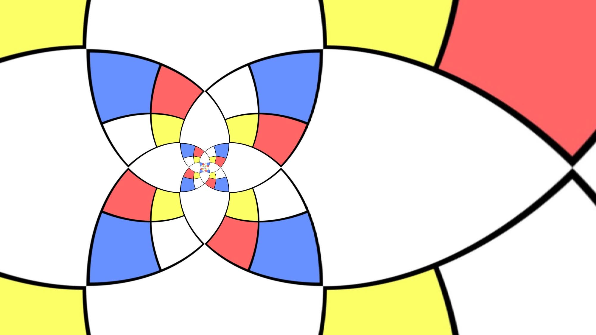
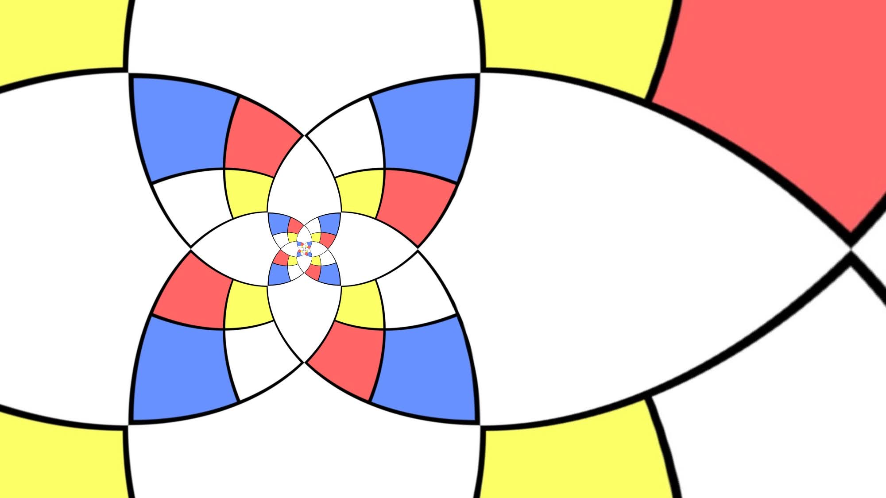

Zine
@releaf.bryce Butterfly Bridge view of Austin Public Library and Shoal Creek
‚ô¨ original sound - ReLeaf üçÉ Bryce
W.A.S.T.E.: Words Assisting Sustainable Transformation & Ecology
|  |
@releaf.bryce Butterfly Bridge view of Austin Public Library and Shoal Creek
‚ô¨ original sound - ReLeaf üçÉ Bryce
|  |